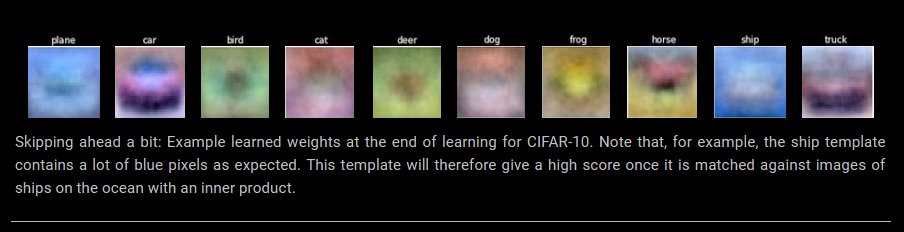
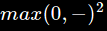
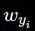
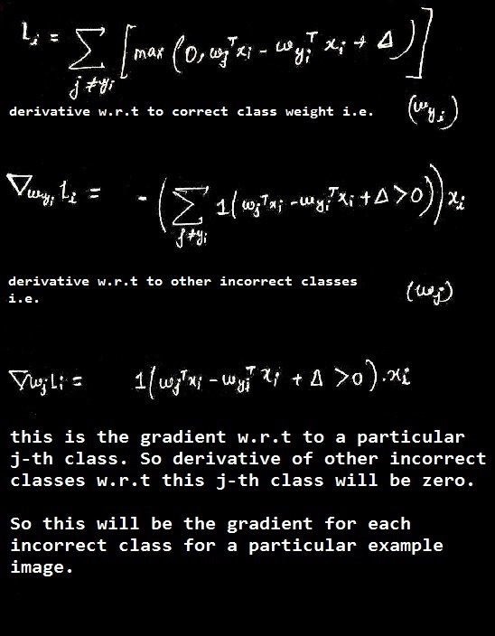

In this post we are going to develop a powerful apporoach to Image Classification as compared to something like a kNN (k Nearest Neighbour) Classifier. This approch will have three major components, a score function that maps raw data into class scores, a loss function that quantifies the agreement between the predicted scores and the ground truth labels and lastly, an optimization technique like SGD to minimize the loss function with respect to the parameters of the score function.
NOTE: We are going to use CIFAR-10 dataset as the primary dataset while understanding the concepts but the code will be implemented on both MNIST and CIFAR-10 datasets. Most of the content is inspired from Linear Classifier Notes and Optimization Notes of Stanford's CS231n Class.
Linear Classifier
Linear Classification is probably the simplest possible mapping function, a linear mapping. A function f maps a particular example image to a score matrix, which contains the scores of that particular example image for each of the classes. The class with the highest scores is chosen for prediction.
This is the linear mapping function where W and b are the parameters of the function and 'x sub i' is the flattened vector of the ith image i.e. a RGB image of shape (32, 32, 3) will be flattened to (3072,). The parameters in W are often called the weights, and b is called the bias vector because it influences the output scores, but without interacting with the actual data x(sub i). However, you will often hear people use the terms weights and parameters interchangeably.
So a few things here are to be taken note of. Multiplying W with x(sub i), means evaluating a single image on 10 (number of classes) seperate classifiers in parallel. Note, we only have control over the parameters W and b and (x, y) i.e. the input and output are all unchanged. We try to modify the parameters W and b so that the above function f could take us as close as possible to y.
Advantage of Linear Classifier Over kNN Image Classifier
In this approach, we use the training data (x, y) to only change the parameters W, b to give desirable results. Once learning is complete, we don't actually need anymore training data. We can completely discard the training set and keep the learned parameters. That is because a new test image can be simply forwarded through the function and classified based on the computed scores. Lastly, note that classifying the test image involves a single matrix multiplication and addition, which is significantly faster than comparing a test image to all training images.
Interpreting A Linear Classifier
Notice that a linear classifier computes the score of a class as a weighted sum of all of its pixel values across all 3 of its color channels. Depending on precisely what values we set for these weights, the function has the capacity to like or dislike (depending on the sign of each weight) certain colors at certain positions in the image. For instance, you can imagine that the “ship” class might be more likely if there is a lot of blue on the sides of an image (which could likely correspond to water). You might expect that the “ship” classifier would then have a lot of positive weights across its blue channel weights (presence of blue increases score of ship), and negative weights in the red/green channels (presence of red/green decreases the score of ship).

Interpretation of linear classifiers as template matching
Another interpretation for the weights W is that each row of W corresponds to a template (or sometimes also called a prototype) for one of the classes. The score of each class for an image is then obtained by comparing each template with the image using an inner product (or dot product) one by one to find the one that “fits” best. With this terminology, the linear classifier is doing template matching, where the templates are learned. Another way to think of it is that we are still effectively doing Nearest Neighbor, but instead of having thousands of training images we are only using a single image per class (although we will learn it, and it does not necessarily have to be one of the images in the training set), and we use the (negative) inner product as the distance instead of the L1 or L2 distance.

The Bias Trick
Here, we are using two parameters, W and b. As we proceed through the stuff, it gets really cumbersome to keep track of two sets of parameters (the biases b and the weights W) seperately. A commonly used trick is to combine these two sets of parameters into one single matrix that holds both of them by expanding the vector x(sub i) with one additional item that always holds the constant 1 - a default bias dimension. With the extra dimension the new score function will get simplified as:

With our CIFAR-10 example, x(sub i) will now be (3073, 1) instead of (3072, 1). The extra column that W has now corresponds to the bias b. The picture below might help to clarify the situation.

Image Data Processing
As a quick note, in the examples above we used the raw pixel values (which range from [0…255]). In Machine Learning, it is a very common practice to always perform normalization of your input features (in the case of images, every pixel is thought of as a feature). In particular, it is important to center your data by subtracting the mean from every feature. In the case of images, this corresponds to computing a mean image across the training images and subtracting it from every image to get images where the pixels range from approximately [-127 … 127]. Further common preprocessing is to scale each input feature so that its values range from [-1, 1].
Loss Functions
For every set of training data (x, y) we can have an infinite number of parameters W and b (just W after using the bias trick). Most of them would do poor job in predicting correct classes for new unseen data and only a few would do reasonable or good job. So, we need a happiness metric which tells us how happy our model is with current set of parameters i.e. W. Loss functions (sometimes also reffered to as cost functions) are our happiness metric. Intuitively, if the loss is low, it means our model is doing a good job classifying data and if the loss is high, it means it's not.
Multiclass Support Vector Machine Loss
So there all kinds of cost/loss functions out there. The one that we are going to deal with in this post is Multiclass Support Vector Machine (SVM) Loss. The SVM loss is set up so that the SVM “wants” the correct class for each image to a have a score higher than the incorrect classes by some fixed margin
Let’s now get more precise. Recall that for the i-th example we are given the pixels of image and the label that specifies the index of the correct class. The score function takes the pixels and computes the vector of class scores, which we will abbreviate to s (short for scores). For example, the score for the j-th class is the j-th element: The Multiclass SVM loss for the i-th example is then formalized as follows:
Let's now try to understand what this cost function means in plain english. This cost function says, for all the incorrect classes (the nine classes except the correct one), if the score of the correct class is greater than the score of the incorrect class atleast by a margin , then the score will be zero. And this is true for all the incorrect classes.
Note, we do not calculate it for the correct class because s(sub j) and s(sub i) i.e. scores of correct and incorrect classes will cancel each other and will remain as the result. So what will happen is, for each training example, loss (because each example will have one correct class) and it will without any effect increase the cost. Hence, it's better to keep the cost for the correct class 0. Below example will make things much more clear.
A last piece of terminology we’ll mention before we finish with this section is that the threshold at zero function is often called the hinge loss. You’ll sometimes hear about people instead using the squared hinge loss SVM (or L2-SVM), which uses the form  that penalizes violated margins more strongly (quadratically instead of linearly). The unsquared version is more standard, but in some datasets the squared hinge loss can work better. This can be determined during cross-validation.
Regularization
There is one bug with the loss function we presented above. Suppose that we have a dataset and a set of parameters W that correctly classify every example (i.e. all scores are so that all the margins are met, and for all i). The issue is that this set of W is not necessarily unique: there might be many similar W that correctly classify the examples. One easy way to see this is that if some parameters W correctly classify all examples (so loss is zero for each example), then any multiple of these parameters λW where λ > 1 will also give zero loss because this transformation uniformly stretches all score magnitudes and hence also their absolute differences. For example, if the difference in scores between a correct class and a nearest incorrect class was 15, then multiplying all elements of W by 2 would make the new difference 30.
In other words, we wish to encode some preference for a certain set of weights W over others to remove this ambiguity. We can do so by extending the loss function with a regularization penalty R(W). The most common regularization penalty is the L2 norm that discourages large weights through an elementwise quadratic penalty over all parameters:
In the expression above, we are summing up all the squared elements of W. Notice that the regularization function is not a function of the data, it is only based on the weights. Including the regularization penalty completes the full Multiclass Support Vector Machine loss, which is made up of two components: the data loss (which is the average loss Li over all examples) and the regularization loss. That is, the full Multiclass SVM loss becomes:
Or expanding this out in its full form:
Where N is the number of training examples. As you can see, we append the regularization penalty to the loss objective, weighted by a hyperparameter λ. There is no simple way of setting this hyperparameter and it is usually determined by cross-validation.
Apart from the reason that L2 regularization will help to reduce the subset of parameters W, they also quite a few other desirable properties. L2 regularization leads to an appealing max margin property in SVM's. L2 regularization also helps the model to generalize better and hence reduce overfitting.
Note that biases do not have the same effect since, unlike the weights, they do not control the strength of influence of an input dimension. Therefore, it is common to only regularize the weights W but not the biases b. However, in practice this often turns out to have a negligible effect. Lastly, note that due to the regularization penalty we can never achieve loss of exactly 0.0 on all examples, because this would only be possible in the pathological setting of W = 0.
The takeaway from this section is that the SVM loss takes one particular approach to measuring how consistent the predictions on training data are with the ground truth labels. Additionally, making good predictions on the training set is equivalent to minimizing the loss.
Practical Considerations
One question which arises is, What value should we set for ? It turns out that the value of can be safely set to 1.0 in all cases. The hyperparameters Δ and λ seem like two different hyperparameters, but in fact they both control the same tradeoff: The tradeoff between the data loss and the regularization loss in the objective. The key to understanding this is that the magnitude of the weights W has direct effect on the scores (and hence also their differences): As we shrink all values inside W the score differences will become lower, and as we scale up the weights the score differences will all become higher. Therefore, the exact value of the margin between the scores (e.g. Δ = 1, or Δ = 100) is in some sense meaningless because the weights can shrink or stretch the differences arbitrarily. Hence, the only real tradeoff is how large we allow the weights to grow (through the regularization strength λ).
Optimization
We now have a loss function formulated which tells us how happy we are with our current set of parameters W. And we like all nice people, wanna be as happy as we can i.e. to say we want to find the set of parameters W which will make us most happy. And only the parameters which will help us to minimize the loss will make us most happy.
In simple mathematical terms, we want to find the value of parameters W which will minimize the loss function.
Note, the working example we’ll use (the SVM loss) is a convex problem, but keep in mind that our goal is to eventually optimize Neural Networks where we can’t easily use any of the tools developed in the Convex Optimization literature.
So, there are many strategies which we can apply to our cause. We'll look a bit into each one of them.
Random Search (Don't Use This)
Since it is so simple to check how good a given set of parameters W is, the first (very bad) idea that may come to mind is to simply try out many different random weights and keep track of what works best. This procedure might look as follows:
Trying the best found value matrice W on the test set, we achieved an accuracy of 15.5%. Given that complete guessing is 10% chance, this is not so bad for this completely brain-dead-algorithm.
From this experimental algorithm, we can understand that it's not possible (unless you are Jesus, maybe) to find the best value of parameters W in one go. We will have to figure out an iterative refinement strategy, which will improve out parameters W a bit on each iteration and we'll eventually end up with a nice set of parameters W which will give low loss.
Random Local Search
The first strategy you may think of is to try to extend one foot in a random direction and then take a step only if it leads downhill. Concretely, we will start out with a random , generate random perturbations to it and if the loss at the perturbed is lower, we will perform an update. The code for this procedure is as follows:
Using the same number of loss function evaluations as before (1000), this approach achieves test set classification accuracy of 21.4%. This is better, but still wasteful and computationally expensive.
Following The Gradient
In the previous section we tried to find a direction in the weight-space that would improve our weight vector (and give us a lower loss). It turns out that there is no need to randomly search for a good direction: we can compute the best direction along which we should change our weight vector that is mathematically guaranteed to be the direction of the steepest descend (at least in the limit as the step size goes towards zero). This direction will be related to the gradient of the loss function. In our hiking analogy, this approach roughly corresponds to feeling the slope of the hill below our feet and stepping down the direction that feels steepest.
In one-dimensional functions, the slope is the instantaneous rate of change of the function at any point you might be interested in. The gradient is a generalization of slope for functions that don’t take a single number but a vector of numbers. Additionally, the gradient is just a vector of slopes (more commonly referred to as derivatives) for each dimension in the input space. The mathematical expression for the derivative of a 1-D function with respect its input is:

Computing The Gradient
There are two ways to compute the gradient: A slow, approximate but easy way (numerical gradient), and a fast, exact but more error-prone way that requires calculus (analytic gradient). We will now present both.
Computing the gradient numerically with finite differences
The formula given above allows us to compute the gradient numerically. Here is a generic function that takes a function f, a vector x to evaluate the gradient on, and returns the gradient of f at x :
Practical Considerations. Note that in the mathematical formulation the gradient is defined in the limit as h goes towards zero, but in practice it is often sufficient to use a very small value (such as 1e-5 as seen in the example). Ideally, you want to use the smallest step size that does not lead to numerical issues. Additionally, in practice it often works better to compute the numeric gradient using the centered difference formula: .
Below is the implementation of this idea.
Update in negative gradient direction. In the code above, notice that to compute W_new we are making an update in the negative direction of the gradient df since we wish our loss function to decrease, not increase.
Effect of step size. The gradient tells us the direction in which the function has the steepest rate of increase, but it does not tell us how far along this direction we should step. In our blindfolded hill-descent analogy, we feel the hill below our feet sloping in some direction, but the step length we should take is uncertain. If we shuffle our feet carefully we can expect to make consistent but very small progress (this corresponds to having a small step size). Conversely, we can choose to make a large, confident step in an attempt to descend faster, but this may not pay off.
A problem of efficiency. You may have noticed that evaluating the numerical gradient has complexity linear in the number of parameters. In our example we had 30730 parameters in total and therefore had to perform 30,731 evaluations of the loss function to evaluate the gradient and to perform only a single parameter update. This problem only gets worse, since modern Neural Networks can easily have tens of millions of parameters. Clearly, this strategy is not scalable and we need something better.
Computing the gradient analytically with Calculus
The numerical gradient is very simple to compute using the finite difference approximation, but the downside is that it is approximate (since we have to pick a small value of h, while the true gradient is defined as the limit as h goes to zero), and that it is very computationally expensive to compute. The second way to compute the gradient is analytically using Calculus, which allows us to derive a direct formula for the gradient (no approximations) that is also very fast to compute. However, unlike the numerical gradient it can be more error prone to implement, which is why in practice it is very common to compute the analytic gradient and compare it to the numerical gradient to check the correctness of your implementation. This is called a gradient check.
Lets use the example of the SVM loss function for a single datapoint:
We can differentiate the function with respect to the weights. For example, taking the gradient with respect to  we obtain:
where 1 is the indicator function that is one if the condition inside is true or zero otherwise. While the expression may look scary when it is written out, when you’re implementing this in code you’d simply count the number of classes that didn’t meet the desired margin (and hence contributed to the loss function) and then the data vector scaled by this number is the gradient. Notice that this is the gradient only with respect to the row of W that corresponds to the correct class. For the other rows where the gradient is:
Once you derive the expression for the gradient it is straight-forward to implement the expressions and use them to perform the gradient update.
So this was all the theory stuff. I implemented this model with SVM Loss And SGD Optimization with fully vectorized implementations on both MNIST and CIFAR-10 datasets.
You can download my implementation Jupyter Notebooks for both the datasets. These are well labelled and commented notebooks. I have used tensorflow to get the datasets for ease of access. You can change the code in the first few lines to load data from any other source you wish.
Click to download the MNIST Implemnation.
Click to download the CIFAR-10 Implementation.
After training the model, the validation accuracy for CIFAR-10 model was around 37% and around 85% for MNIST Implementaion. Below are the templates generated after training for both the datasets.
CIFAR-10
MNIST
And now we'll try to figure out the naive and vectorized implementations of the loss and grad function.
Naive Loss
Above code is the naive implementation for the SVM loss. In this implementation, we loop over all the examples one by one and for each example, for all the incorrect classes we add the losses provided if the loss for that particular class is greater than 0. And yes, loss for the correct class is defined to be 0.
Naive Gradient
Proof for the gradients calculation w.r.t to parameters of both correct and incorrect classes.
